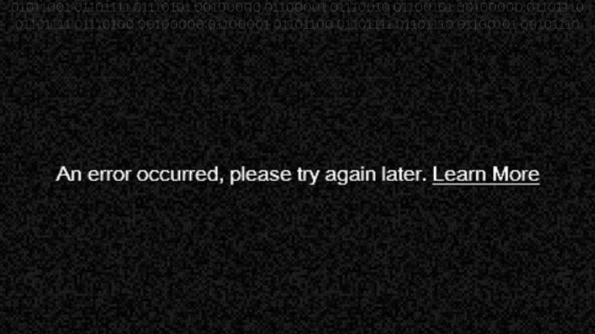

70's TV Local Website
Est. 1949Home Page |
Community |
Services |
(Watch Live) |
Moments |
Watch our live broadcast Here!

WYNA-TV Live
On November 15th, 1991, The WYNA-TV Live broadcast on this website, was closed. Due to the mass of unknown hackers, replacing the live broadcast with a traumatic videos, and so on, on this website.
For now, the live broadcast can only be watched through via television, and TVWeb only. We are so sorry.Use TVWeb to watch our live broadcast for only $9.99/month, or use the WYNA Transmitter for only $10, while we handle this situation.